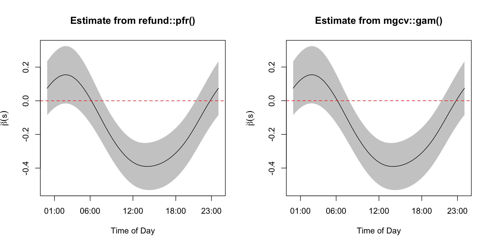
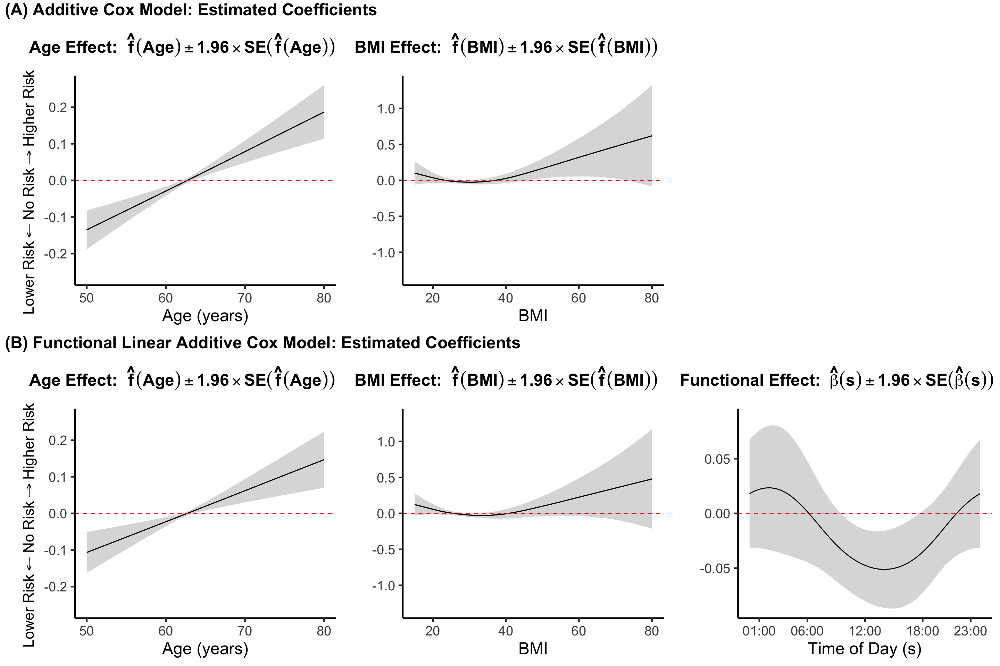

We first illustrate the survival data analysis concepts using examples from the NHANES data collected between 2011-2014.
library(tidyverse)
library(survival)
library(mgcv)
library(refund)
library(cowplot)
df_cleaned <- readRDS("./data/nhanes_fda_with_r.rds")
df_fig71 <- df_cleaned %>%
mutate(time_yr = round(time / 12, 2)) %>%
select(SEQN, time = time_yr, event, age, BMI, race, gender, CHD) %>%
filter(SEQN %in% c(64759, 70962, 73561, 75630, 77244, 82820))
#get survival data with functional predictors
nhanes_df_surv <- df_cleaned %>%
mutate(time_yr = round(time / 12, 2)) %>%
filter(!is.na(event)) %>%
select(SEQN, time = time_yr, event, age, BMI, race, gender, CHD, TMIMS, MIMS)Below is the code to obtain a sample of six participants in NHANES 2011-2014. The code then reproduce Figure 7.2 of the book.
df_sample <- df_fig71
df_sample$MIMS <- df_cleaned$MIMS[which(df_cleaned$SEQN %in% df_sample$SEQN),]
str(df_sample)
## 'data.frame': 6 obs. of 9 variables:
## $ SEQN : num 64759 70962 73561 75630 77244 ...
## $ time : num 3.33 8.17 0.75 6.33 6.58 1.5
## $ event : int 1 0 1 0 0 1
## $ age : num 80 40 73 59 42 78
## $ BMI : num 24.8 45 19.7 28.3 25.9 26.9
## $ race : Factor w/ 6 levels "Mexican American",..: 3 4 3 1 4 3
## $ gender: Factor w/ 2 levels "Male","Female": 1 1 2 2 1 1
## $ CHD : Factor w/ 4 levels "No","Yes","Refused",..: 1 1 1 1 1 1
## $ MIMS : 'AsIs' num [1:6, 1:1440] 0.0969 1.7742 0.7577 10.6671 4.459 ...
## ..- attr(*, "dimnames")=List of 2
## .. ..$ : chr [1:6] "64759" "70962" "73561" "75630" ...
## .. ..$ : chr [1:1440] "MIN0001" "MIN0002" "MIN0003" "MIN0004" ...
#plot NHANES sample data
layout(matrix(c(1:21), 7, 3, byrow = FALSE), widths = c(1, 2, 4))
#title of other info
par(mar = c(0,0,0,0))
plot(c(0, 1), c(0, 1), ann = F, bty = 'n', type = 'n', xaxt = 'n', yaxt = 'n')
text(x = 0.45, y = 0.5, paste("SEQN"), cex = 1.8, col = "black", font = 2)
#other info
par(mar = c(1,0,1,1))
for(i in 1:6){
plot(c(0, 1), c(0, 1), ann = F, bty = 'n', type = 'n', xaxt = 'n', yaxt = 'n')
mtext(side = 4, text = df_sample$SEQN[i], line = -6.5, cex = 1.2, las = 1)
}
#title of predictors
par(mar = c(0,0,0,0))
plot(c(0, 1), c(0, 1), ann = F, bty = 'n', type = 'n', xaxt = 'n', yaxt = 'n')
text(x = 0.45, y = 0.5, paste("Predictors"), cex = 1.8, col = "black", font = 2)
#other info
par(mar = c(1,0,1,1))
for(i in 1:6){
plot(c(0, 1), c(0, 1), ann = F, bty = 'n', type = 'n', xaxt = 'n', yaxt = 'n')
mtext(side = 4, text = paste0("age: ", df_sample$age[i],
", gender: ", df_sample$gender[i],
", BMI: ", df_sample$BMI[i],
", \n", df_sample$race[i],
", CHD: ", df_sample$CHD[i]), line = -17, cex = 0.8, las = 1)
}
#title of survival data
par(mar = c(0,0,0,0))
plot(c(0, 1), c(0, 1), ann = F, bty = 'n', type = 'n', xaxt = 'n', yaxt = 'n')
text(x = 0.45, y = 0.5, paste("Time to event"), cex = 1.8, col = "black", font = 2)
#survival data
par(mar = c(0.2,0.5,0.2,0.5))
for(j in 1:6){
if(df_sample$event[j] == 1){
plot(x = c(0, df_sample$time[j]), y = c(0, 0), type = "l", xlim = c(0, 8.7), xaxt = "n", yaxt = "n", bty = "n", col = "red", lwd = 2)
points(x = df_sample$time[j], y = 0, pch = 4, col = "red", cex = 2)
text(df_sample$time[j], 0, labels = paste0(format(round(df_sample$time[j], 2), nsmall = 2), " years"), cex = 1.5, pos = 3, col = "red")
}else{
plot(x = c(0, df_sample$time[j]), y = c(0, 0), type = "l", xlim = c(0, 8.7), xaxt = "n", yaxt = "n", bty = "n", lwd = 2)
points(x = df_sample$time[j], y = 0, pch = 16, cex = 2)
text(df_sample$time[j], 0, labels = paste0(format(round(df_sample$time[j], 2), nsmall = 2), " years"), cex = 1.5, pos = 3)
}
if(j == 1){
legend(4.85, 1.3, legend=c("Censored", "Deceased"),
col=c("black", "red"), lty=1, lwd = 2, cex=1.5, box.lty=0, y.intersp=1.3)
}
}Instead of only focusing on the survival outcomes, we now incorporate the functional predictors into the data set. The code below shows how to reproduce Figure 7.4 of the book.
layout(matrix(c(1:21), 7, 3, byrow = FALSE), widths = c(1, 2, 4))
#title of other info
par(mar = c(0,0,0,0))
plot(c(0, 1), c(0, 1), ann = F, bty = 'n', type = 'n', xaxt = 'n', yaxt = 'n')
text(x = 0.45, y = 0.5, paste("SEQN"), cex = 1.8, col = "black", font = 2)
#other info
par(mar = c(1,0,1,1))
for(i in 1:6){
plot(c(0, 1), c(0, 1), ann = F, bty = 'n', type = 'n', xaxt = 'n', yaxt = 'n')
mtext(side = 4, text = df_sample$SEQN[i], line = -6.5, cex = 1.2, las = 1)
}
#title of predictors
par(mar = c(0,0,0,0))
plot(c(0, 1), c(0, 1), ann = F, bty = 'n', type = 'n', xaxt = 'n', yaxt = 'n')
text(x = 0.45, y = 0.5, paste("Predictors"), cex = 1.8, col = "black", font = 2)
#other info
par(mar = c(2,0,1,1))
for(i in 1:6){
plot(df_sample$MIMS[i,], type = "l", xaxt = "n", xlab = "", bty = "n", yaxt = "n")
axis(side = 1, at = c(1, 72, 144, 216, 288)*5, labels = c("00:00", "06:00", "12:00", "18:00", "24:00"), padj = -1)
mtext(side = 4, text = paste0("age: ", df_sample$age[i], ", ...\n"), line = -20, cex = 0.8, las = 1)
}
#title of survival data
par(mar = c(0,0,0,0))
plot(c(0, 1), c(0, 1), ann = F, bty = 'n', type = 'n', xaxt = 'n', yaxt = 'n')
text(x = 0.5, y = 0.5, paste("Time to event"), cex = 2, col = "black", font = 2)
#survival data
par(mar = c(0.2,0.5,0.2,0.5))
for(j in 1:6){
if(df_sample$event[j] == 1){
plot(x = c(0, df_sample$time[j]), y = c(0, 0), type = "l", xlim = c(0, 8.7), xaxt = "n", yaxt = "n", bty = "n", col = "red", lwd = 2)
points(x = df_sample$time[j], y = 0, pch = 4, col = "red", cex = 2)
text(df_sample$time[j], 0, labels = paste0(format(round(df_sample$time[j], 2), nsmall = 2), " years"), cex = 1.5, pos = 3, col = "red")
}else{
plot(x = c(0, df_sample$time[j]), y = c(0, 0), type = "l", xlim = c(0, 8.7), xaxt = "n", yaxt = "n", bty = "n", lwd = 2)
points(x = df_sample$time[j], y = 0, pch = 16, cex = 2)
text(df_sample$time[j], 0, labels = paste0(format(round(df_sample$time[j], 2), nsmall = 2), " years"), cex = 1.5, pos = 3)
}
if(j == 1){
legend(4.85, 1.3, legend=c("Censored", "Deceased"),
col=c("black", "red"), lty=1, lwd = 2, cex=1.5, box.lty=0, y.intersp=1.3)
}
}We further explore the NHANES 2011-2014 survival data by investigating the Kaplan-Meyer (KM) estimators of the survival function for specific subgroups. The code below reproduce Figure 7.5 of the book which displays results for different age groups at baseline.
library(survival)
library(survminer)
library(gridExtra)
nhanes_df_surv$Age_cat <- cut(nhanes_df_surv$age,
breaks = c(20, 50, 80),
include.lowest = TRUE)
#set PA group within each age group
TMIMS_cat_age <- rep(NA, nrow(nhanes_df_surv))
for(age_group in c("[20,50]", "(50,80]")){
TMIMS_cat_age[which(nhanes_df_surv$Age_cat == age_group)] <-
cut(nhanes_df_surv$TMIMS[which(nhanes_df_surv$Age_cat == age_group)],
breaks = quantile(nhanes_df_surv$TMIMS[which(nhanes_df_surv$Age_cat == age_group)], c(0, 0.333, 0.667, 1)),
labels = c("low TMIMS", "medium TMIMS", "high TMIMS"),
include.lowest = TRUE)
}
nhanes_df_surv$TMIMS_cat_age <- factor(TMIMS_cat_age, labels = c("low TMIMS", "medium TMIMS", "high TMIMS"))
rm(age_group, TMIMS_cat_age)
#draw KM curves by TMIMS category
##create survival object
nhanes_df_surv$SurvObj <- with(nhanes_df_surv, Surv(time, event))
##TMIMS by age
TMIMS.age.km.plot <- list()
for(age_group in c("[20,50]", "(50,80]")){
TMIMS.age.km <- survfit(SurvObj ~ TMIMS_cat_age, data = nhanes_df_surv %>% filter(Age_cat == age_group))
TMIMS.age.km.plot[[age_group]] <- ggsurvplot(fit = TMIMS.age.km,
data = nhanes_df_surv,
risk.table = TRUE,
pval = TRUE,
conf.int = FALSE,
break.time.by = 1,
ggtheme = theme_minimal(),
risk.table.y.text.col = TRUE,
risk.table.y.text = FALSE,
legend.title = "PA Level",
legend.labs = c("low", "medium", "high"),
title = paste0("Age: ", age_group),
xlim = c(0, 8.2),
ylim = c(0.5, 1),
pval.size = 6,
pval.coord = c(0.58, 0.57),
fontsize = 4.3)
TMIMS.age.km.plot[[age_group]]$plot <- TMIMS.age.km.plot[[age_group]]$plot +
theme(legend.text = element_text(size = 15, color = "black"),
legend.title = element_text(size = 15, color = "black"),
title = element_text(size = 14, color = "black"),
axis.title.x = element_text(size = 15)) +
xlim(0, 8.2)
TMIMS.age.km.plot[[age_group]]$table <- TMIMS.age.km.plot[[age_group]]$table +
theme(axis.title.x = element_text(size = 15),
axis.title.y = element_text(size = 15),
title = element_text(size = 14))
}
grid.arrange(TMIMS.age.km.plot$`[20,50]`$plot,
TMIMS.age.km.plot$`(50,80]`$plot,
TMIMS.age.km.plot$`[20,50]`$table,
TMIMS.age.km.plot$`(50,80]`$table,
heights = c(3, 1),
nrow = 2)We now show how to fit standard Cox models. The results are shown in Table 7.1 of the book.
df_cleaned <- nhanes_df_surv %>%
filter(age >= 50 & !is.na(BMI) & !is.na(race) & !is.na(gender) & !is.na(CHD) & !is.na(TMIMS)
& CHD %in% c("Yes", "No"))
fit_M1 <- coxph(Surv(time, event) ~ age + gender + race, data = df_cleaned)
summary(fit_M1, conf.int = FALSE)
## Call:
## coxph(formula = Surv(time, event) ~ age + gender + race, data = df_cleaned)
##
## n= 4180, number of events= 698
##
## coef exp(coef) se(coef) z Pr(>|z|)
## age 0.102206 1.107612 0.004884 20.926 < 2e-16 ***
## genderFemale -0.272688 0.761330 0.076073 -3.585 0.000338 ***
## raceOther Hispanic -0.169661 0.843951 0.216029 -0.785 0.432242
## raceNon-Hispanic White 0.210762 1.234619 0.163065 1.293 0.196181
## raceNon-Hispanic Black 0.180265 1.197534 0.171762 1.050 0.293947
## raceNon-Hispanic Asian -0.389520 0.677382 0.229697 -1.696 0.089925 .
## raceOther Race 0.543402 1.721854 0.300130 1.811 0.070210 .
## ---
## Signif. codes: 0 '***' 0.001 '**' 0.01 '*' 0.05 '.' 0.1 ' ' 1
##
## Concordance= 0.754 (se = 0.01 )
## Likelihood ratio test= 626.7 on 7 df, p=<2e-16
## Wald test = 529.1 on 7 df, p=<2e-16
## Score (logrank) test = 630.8 on 7 df, p=<2e-16
fit_M2 <- coxph(Surv(time, event) ~ age + gender + race + BMI + CHD, data = df_cleaned)
summary(fit_M2, conf.int = FALSE)
## Call:
## coxph(formula = Surv(time, event) ~ age + gender + race + BMI +
## CHD, data = df_cleaned)
##
## n= 4180, number of events= 698
##
## coef exp(coef) se(coef) z Pr(>|z|)
## age 0.098356 1.103356 0.004982 19.743 < 2e-16 ***
## genderFemale -0.214727 0.806762 0.077161 -2.783 0.00539 **
## raceOther Hispanic -0.163071 0.849531 0.216077 -0.755 0.45044
## raceNon-Hispanic White 0.182709 1.200465 0.163155 1.120 0.26278
## raceNon-Hispanic Black 0.209753 1.233373 0.171802 1.221 0.22212
## raceNon-Hispanic Asian -0.412425 0.662043 0.231816 -1.779 0.07522 .
## raceOther Race 0.519289 1.680832 0.300163 1.730 0.08363 .
## BMI -0.005780 0.994237 0.006638 -0.871 0.38391
## CHDYes 0.567735 1.764266 0.103012 5.511 3.56e-08 ***
## CHDRefused NA NA 0.000000 NA NA
## CHDDon't know NA NA 0.000000 NA NA
## ---
## Signif. codes: 0 '***' 0.001 '**' 0.01 '*' 0.05 '.' 0.1 ' ' 1
##
## Concordance= 0.76 (se = 0.01 )
## Likelihood ratio test= 654.3 on 9 df, p=<2e-16
## Wald test = 573.6 on 9 df, p=<2e-16
## Score (logrank) test = 690.5 on 9 df, p=<2e-16
fit_M3 <- coxph(Surv(time, event) ~ age + gender + race + BMI + CHD + TMIMS, data = df_cleaned)
summary(fit_M3, conf.int = FALSE)
## Call:
## coxph(formula = Surv(time, event) ~ age + gender + race + BMI +
## CHD + TMIMS, data = df_cleaned)
##
## n= 4180, number of events= 698
##
## coef exp(coef) se(coef) z Pr(>|z|)
## age 0.0709039 1.0734781 0.0052525 13.499 < 2e-16 ***
## genderFemale -0.0599678 0.9417948 0.0780030 -0.769 0.442019
## raceOther Hispanic -0.1494232 0.8612046 0.2160182 -0.692 0.489116
## raceNon-Hispanic White 0.0717456 1.0743820 0.1626740 0.441 0.659185
## raceNon-Hispanic Black 0.0837017 1.0873045 0.1718321 0.487 0.626178
## raceNon-Hispanic Asian -0.4691413 0.6255392 0.2316202 -2.025 0.042818 *
## raceOther Race 0.4365582 1.5473723 0.3000154 1.455 0.145636
## BMI -0.0248345 0.9754714 0.0067596 -3.674 0.000239 ***
## CHDYes 0.4405216 1.5535173 0.1033900 4.261 2.04e-05 ***
## CHDRefused NA NA 0.0000000 NA NA
## CHDDon't know NA NA 0.0000000 NA NA
## TMIMS -0.0001674 0.9998326 0.0000135 -12.393 < 2e-16 ***
## ---
## Signif. codes: 0 '***' 0.001 '**' 0.01 '*' 0.05 '.' 0.1 ' ' 1
##
## Concordance= 0.783 (se = 0.009 )
## Likelihood ratio test= 811.6 on 10 df, p=<2e-16
## Wald test = 704.6 on 10 df, p=<2e-16
## Score (logrank) test = 826.3 on 10 df, p=<2e-16As discussed in Chapter 7.3 of the book, we consider the extension of the linear functional model to Cox regression, the Linear Functional Cox Model (LFCM). We motivate the model with an application to the NHANES 2011-2014 accelerometry data. As in previous chapters, the functional predictor, 24-hour activity profiles, is denoted as \(W_i:S\rightarrow \mathbb{R}\) for each study participant, \(i=1,\ldots,n\). The linear Cox model is then
\[\begin{equation} \log \lambda_i\{t|\mathbf{Z}_i,W_i(\cdot)\} = \log\{\lambda_0(t)\} + \mathbf{Z}_i^t \boldsymbol{\gamma} + \int_S W_i(s)\beta(s)ds\;. \label{eq:ch7_n61} \end{equation}\]
Before estimating this model, we first subset our data to those participants aged 50-80 (recall, data has been subset already to ages 50 and over). Additionally, we drop factor variables in the models (in this case just CHD) with levels “Don’t know” and “refused”.
## get a set of variables for subjects using pair-wise available data
## who meet our age criteria
## and re-code dont know or refused as missing
nhanes_df_surv <-
df_cleaned %>%
filter(age < 80) %>%
## replace don't know and refused levels with NA
mutate_if(.predicate=is.factor, .funs=function(x) recode_factor(x, "Don't know" = NA_character_, "Refused" = NA_character_)) %>%
## create mortality time in years
mutate(time = time/12) With the data set up, we first estimate the model using refund::pfr by using the refund::lf constructor for linear functional terms, applying a cyclic cubic regression spline basis to estimate the functional effect, \(\beta\).
nS <- ncol(nhanes_df_surv$MIMS) # dimension of the functional predictor
svec <- seq(0, 1, len = nS) # observed points on the functional domain
fit_lfcm_pfr <- pfr(time ~ age + BMI + gender + CHD +
lf(MIMS, bs="cc",k=30,argvals=svec),
method="REML", data=nhanes_df_surv,weights=nhanes_df_surv$event,
family=cox.ph)
## Warning in newton(lsp = lsp, X = G$X, y = G$y, Eb = G$Eb, UrS = G$UrS, L = G$L,
## : gam.fit5 step failed: max magnitude relative grad = 2.08629722778414e-08As in the book, we now show how to fit the same model using mgcv::gam directly. To do this, we need to set up the relevant data matrices used for fitting the LFCM using our spline basis expansion combined with numerical apprxoimation of the integral term. Note that for simplicity of presentation we use Riemann integration to determine our quadrature weights, while refund::pfr uses Simpson’s rule by default. The results from the two models will thus be very similar, but not identical. If we used Simpson’s rule for assigning quadrature weights, the results would indeed by identical.
N <- nrow(nhanes_df_surv) # number of samples
#Quadrature weights for Riemann integration
lvec <- matrix(1 / nS, 1440, 1)
# matrix containing quadrature weights for all participants
L <- kronecker(matrix(1, N, 1),t(lvec))
# matrix containing functional domain values
S <- kronecker(matrix(1, N, 1), t(svec))
nhanes_df_surv$S <- I(S)
#Pointwise product of w i(s) and the quadrature weights, "L"
nhanes_df_surv$W_L <- I(nhanes_df_surv$MIMS * L)We then fit the model using the corresponding mgcv::gam syntax.
fit_lfcm_mgcv <- gam(time ~ age + BMI + gender + CHD +
s(S, by=W_L, bs="cc",k=30), method="REML",
data=nhanes_df_surv, weights=nhanes_df_surv$event,
family=cox.ph)Finally, we plot the results from the two estimation procedures (point estimates and point-wise confidence intervals) using the plot method associated with the mgcv::gam and refund::pfr functions. The way to obtain estimated coefficient values and their corresponding standard errors is shown in the next subsection of this vignette.
xinx <- (c(1,6,12,18,23)*60+1)/1440
xinx_lab <- c("01:00","06:00","12:00","18:00","23:00")
par(mfrow=c(1,2))
plot(fit_lfcm_pfr, rug=FALSE, shade=TRUE,xlab="Time of Day", ylab=expression(hat(beta)(s)), main="Estimate from refund::pfr()",
xaxt='n')
abline(h=0,col='red',lty=2)
axis(1, at=xinx, labels=xinx_lab)
plot(fit_lfcm_mgcv, rug=FALSE, shade=TRUE,xlab="Time of Day", ylab=expression(hat(beta)(s)), main="Estimate from mgcv::gam()",
xaxt='n')
abline(h=0,col='red',lty=2)
axis(1, at=xinx, labels=xinx_lab)
We not consider the scenario where we want to estimate a linear functional term and a non-linear effect of a scalar covariate in a Cox model framework. Suppose that an individual’s covariate vector of non-functional predictors is \(\mathbf{Z}_i = [\mathbf{Z}^t_{i,1}, \mathbf{Z}^t_{i,2} ]^t\), where \(\mathbf{Z}_{i,1}\) is a vector of length \(Q_1\) containing the covariates for which we assume a linear effect, and \(\mathbf{Z}_{i,2}\) is a vector of length \(Q_2\) containing the covariates for which we assume a non-linear (additive) effect. Here \(Q=Q_1+Q_2\) is the total number of scalar covariates. The LFCM then becomes \[\begin{align} \log \lambda_i\{t|\mathbf{Z}_i, W_i(\cdot)\} &= \log\{\lambda_0(t)\} + \sum_{q=1}^{Q_1} \gamma_q Z_{iq} + \sum_{q=Q_1+1}^Q f_q(Z_{iq}) + \int_S W_i(s)\beta(s)ds \label{eq:lfcm_am}\;. \end{align}\]
Returning to our data appliaction, suppose we want to let \(Z_{i,1} = [\text{age}_i, \text{BMI}_i]^t\) and \(Z_{i,2} = [\text{gender}_i, \text{CHD}_i]^t\). That is, we want to estimate non-linear effects of age and BMI on mortality, with linear effects for our categorical (binary) predictors of gender and CHD.
We first show how to fit a model with non-linear effects for age and BMI using the same syntax presented in previous chapters.
fit_acm <- gam(time ~ s(age,k=30,bs="cr") + s(BMI,k=30,bs="cr")+
gender+CHD,
method="REML",
data=nhanes_df_surv, weights=nhanes_df_surv$mortstat,
family=cox.ph)We can add a linear functional term easily by moving to the refund::pfr function (alternatively, use mgcv::gam directly using the approach described above).
fit_lfcm_acm <- pfr(time ~ s(age,k=30,bs="cr") + s(BMI,k=30,bs="cr") +
gender + CHD +
lf(MIMS, bs="cc",k=30,argvals=svec),
method="REML", data=nhanes_df_surv,weights=nhanes_df_surv$mortstat,
family=cox.ph)The estimated coefficients can then be obtained using a call the the predict method for refund::pfr with type=“terms”.
aind <- seq(50,80,len=100)
bind <- seq(15,80,len=100)
df_pred <- data.frame("age" = aind,
"BMI" = bind,
gender="Male",CHD="No","MIMS"=I(matrix(nhanes_df_surv$MIMS[1,], 100, 1440, byrow=TRUE)))
coefs_lfcm_acm <- predict(fit_lfcm_acm, newdata=df_pred,type='terms',se.fit=TRUE)
coefs_lfcm_acm <- data.frame("est_age" = coefs_lfcm_acm$fit[,"s(age)"],
"se_age" = coefs_lfcm_acm$se.fit[,"s(age)"],
"est_bmi" = coefs_lfcm_acm$fit[,"s(BMI)"],
"se_bmi" = coefs_lfcm_acm$se.fit[,"s(BMI)"])
coefs_lfcm_acm <-
coefs_lfcm_acm %>%
mutate("LB_age" = est_age - qnorm(0.975)*se_age,
"UB_age" = est_age + qnorm(0.975)*se_age,
"LB_bmi" = est_bmi - qnorm(0.975)*se_bmi,
"UB_bmi" = est_bmi + qnorm(0.975)*se_bmi)
beta_lfcm_acm <- coef(fit_lfcm_acm, n=100, select=3)
coefs_lfcm_acm[["est_beta"]] <- beta_lfcm_acm$value[,1]
coefs_lfcm_acm[["sind"]] <- beta_lfcm_acm$MIMS.argvals
coefs_lfcm_acm[["LB_beta"]] <- beta_lfcm_acm$value[,1] - qnorm(0.975)*beta_lfcm_acm$se
coefs_lfcm_acm[["UB_beta"]] <- beta_lfcm_acm$value[,1] + qnorm(0.975)*beta_lfcm_acm$se
coefs_acm <- predict(fit_acm, newdata=df_pred,type='terms',se.fit=TRUE)
coefs_acm <- data.frame("est_age" = coefs_acm$fit[,"s(age)"],
"se_age" = coefs_acm$se.fit[,"s(age)"],
"est_bmi" = coefs_acm$fit[,"s(BMI)"],
"se_bmi" = coefs_acm$se.fit[,"s(BMI)"])
coefs_acm <-
coefs_acm %>%
mutate("LB_age" = est_age - qnorm(0.975)*se_age,
"UB_age" = est_age + qnorm(0.975)*se_age,
"LB_bmi" = est_bmi - qnorm(0.975)*se_bmi,
"UB_bmi" = est_bmi + qnorm(0.975)*se_bmi)
coefs_acm <- data.frame(dplyr::select(df_pred, -MIMS), coefs_acm)
coefs_lfcm_acm <- data.frame(dplyr::select(df_pred, -MIMS), coefs_lfcm_acm)We can then create Figure 7.10 in the textbook using the code below.
lims_bmi <- max(abs(c(as.vector(unlist(coefs_acm[,c("LB_bmi","UB_bmi")])), as.vector(unlist(coefs_lfcm_acm[,c("LB_bmi","UB_bmi")]) ))))*c(-1,1)
lims_age <- max(abs(c(as.vector(unlist(coefs_acm[,c("LB_age","UB_age")])), as.vector(unlist(coefs_lfcm_acm[,c("LB_age","UB_age")]) ))))*c(-1,1)
lims_beta <- max(abs(as.vector(unlist(coefs_lfcm_acm[,c("LB_beta","UB_beta")] ))))*c(-1,1)
plt_acm_age_coef <-
coefs_acm %>%
ggplot() +
geom_ribbon(aes(x=age, ymin=LB_age,ymax=UB_age),alpha=0.2) +
geom_line(aes(x=age,y=est_age)) +
geom_line(aes(x=age,y=est_age)) +
geom_hline(yintercept=0, lty=2, color='red') +
xlab("Age (years)") +
ylab("")+
theme_classic(base_size=18)+ ylim(lims_age)
plt_acm_bmi_coef <-
coefs_acm %>%
ggplot() +
geom_ribbon(aes(x=BMI, ymin=LB_bmi,ymax=UB_bmi),alpha=0.2) +
geom_line(aes(x=BMI,y=est_bmi)) +
geom_line(aes(x=BMI,y=est_bmi)) +
geom_hline(yintercept=0, lty=2, color='red') +
xlab("BMI") +
ylab("")+
theme_classic(base_size=18)+ ylim(lims_bmi)
plt_lfcm_acm_age_coef <-
coefs_lfcm_acm %>%
ggplot() +
geom_ribbon(aes(x=age, ymin=LB_age,ymax=UB_age),alpha=0.2) +
geom_line(aes(x=age,y=est_age)) +
geom_line(aes(x=age,y=est_age)) +
theme_classic(base_size=18)+ ylim(lims_age)+
geom_hline(yintercept=0, lty=2, color='red') +
xlab("Age (years)") +
ylab("")
plt_lfcm_acm_bmi_coef <-
coefs_lfcm_acm %>%
ggplot() +
geom_ribbon(aes(x=BMI, ymin=LB_bmi,ymax=UB_bmi),alpha=0.2) +
geom_line(aes(x=BMI,y=est_bmi)) +
geom_line(aes(x=BMI,y=est_bmi)) +
theme_classic(base_size=18) + ylim(lims_bmi) +
geom_hline(yintercept=0, lty=2, color='red') +
xlab("BMI") +
ylab("")
plt_lfcm_acm_beta_coef <-
coefs_lfcm_acm %>%
ggplot() +
geom_ribbon(aes(x=sind, ymin=LB_beta,ymax=UB_beta),alpha=0.2) +
geom_line(aes(x=sind,y=est_beta)) +
geom_hline(yintercept=0, lty=2, color='red') +
theme_classic(base_size=18) +
ylab("")+
scale_x_continuous(breaks=(c(1,6,12,18,23)*60+1)/1440, labels=c("01:00","06:00","12:00","18:00","23:00")) +
xlab("Time of Day (s)") +ylim(lims_beta)
title_coef_lfcm_v2 <- ggplot() +
theme(panel.background = element_rect(fill = "black"),plot.title = element_text(size=18))+
labs(title = expression(bold("Functional Effect: " ~ hat(bold(beta))(s) %+-% bold("1.96") %*% SE(hat(bold(beta))(s)) ~ phantom(hat(bold(f))))))
title_coef_acm_age <- ggplot() +
theme(panel.background = element_rect(fill = "black"),plot.title = element_text(size=18))+
labs(title = expression(bold("Age Effect: " ~ hat(bold(f))(Age) %+-% bold("1.96") %*% SE(hat(bold(f))(Age)))))
title_coef_acm_bmi <- ggplot() +
theme(panel.background = element_rect(fill = "black"),plot.title = element_text(size=18))+
labs(title = expression(bold("BMI Effect: " ~ hat(bold(f))(BMI) %+-% bold("1.96") %*% SE(hat(bold(f))(BMI)))) )
title_acm <- ggplot() +
theme(panel.background = element_rect(fill = "black"),plot.title = element_text(size=18))+
labs(title = expression(bold("Additive Cox Model")))
title_lfcm_acm <- ggplot() +
theme(panel.background = element_rect(fill = "black"),plot.title = element_text(size=18))+
labs(title = expression(bold("(B) Functional Linear Additive Cox Model: Estimated Coefficients")))
title_acm <- ggplot() +
theme(panel.background = element_rect(fill = "black"),plot.title = element_text(size=18))+
labs(title = expression(bold("(A) Additive Cox Model: Estimated Coefficients")))
title_coef_lfcm_acm <- plot_grid(NULL, title_coef_acm_age, title_coef_acm_bmi, title_coef_lfcm_v2, ncol=4, rel_widths = c(0.075,1,1,1))
title_coef_acm <- plot_grid(NULL, title_coef_acm_age, title_coef_acm_bmi, NULL, ncol=4, rel_widths = c(0.075,1,1,1))
plt_coef_acm_lfcm <-
plot_grid(NULL, plt_lfcm_acm_age_coef, plt_lfcm_acm_bmi_coef, plt_lfcm_acm_beta_coef, ncol=4,
label_size = 12, rel_widths = c(0.05,1,1,1))+
draw_label(x=0.03,y=0.53, label=expression("Lower Risk" %<-% "No Risk" %->% "Higher Risk"),
angle=90,size=16)
plt_coef_acm <-
plot_grid(NULL, plt_acm_age_coef, plt_acm_bmi_coef, NULL, ncol=4,
label_size = 12, rel_widths = c(0.05,1,1,1))+
draw_label(x=0.03,y=0.53, label=expression("Lower Risk" %<-% "No Risk" %->% "Higher Risk"),
angle=90,size=16)
plt_coef_acm_lfcm_comp <- plot_grid(title_lfcm_acm, title_coef_lfcm_acm,plt_coef_acm_lfcm, rel_heights = c(0.115,0.1385, 1),ncol=1 )
plt_coef_acm_comp <- plot_grid(title_acm, title_coef_acm,plt_coef_acm, rel_heights = c(0.115,0.1385, 1),ncol=1 )
plt_coefs_combined_acm_lfcm <- plot_grid(plt_coef_acm_comp, plt_coef_acm_lfcm_comp, ncol=1)
plt_coefs_combined_acm_lfcm
Although the linear functional Cox model provides an efficient and reasonable estimation framework to analyze the association between baseline functional predictors and survival outcome, one limitation is that it only allows a linear association between the functional predictor at each location of the domain and the log hazard.
The additive functional Cox model replaces the linear functional \(\int_S W_i(s)\beta(s)ds\) model with the functional term \(\int_S F\{s, W_i(s)\}ds\), where \(F(\cdot, \cdot)\) is an unknown bivariate smooth function to be estimated. The model becomes
\[\log \lambda_i\{t|\mathbf{Z}_i,W_i(\cdot)\} = \log\{\lambda_0(t)\} + \mathbf{Z}_i^t \boldsymbol{\gamma} + \int_S F\{s, W_i(s)\}ds\;. \]
The code to fit an additive functional Cox model using the mgcv package and reproduce Figure 7.11 of the book is shown below.
df_cleaned <- nhanes_df_surv %>%
filter(age >= 50 & !is.na(age) & !is.na(BMI) & !is.na(gender) & !is.na(CHD))
nS <- ncol(df_cleaned$MIMS)
N <- nrow(df_cleaned)
sind <- seq(0, 1, len = nS)
lind <- rep(1/nS, nS)
df_cleaned$smat <- I(matrix(rep(sind, N), N, nS, byrow=TRUE))
df_cleaned$lmat <- I(matrix(rep(lind, N), N, nS, byrow=TRUE))
#get physical activity quantiles
df_cleaned$MIMS_sm <- I(fpca.face(unclass(df_cleaned$MIMS))$Yhat)
df_cleaned$MIMS_q <- I(apply(df_cleaned$MIMS_sm, 2, function(y) ecdf(y)(y)))
#fit AFCM
fit_afcm <- gam(time ~ age + BMI + gender + CHD +
ti(MIMS_q, smat, by = lmat, bs = c("cr", "cc"), k = c(5, 5), mc = c(TRUE, FALSE)),
weights = event, data = df_cleaned, family = cox.ph())
#obtain estimated surface
par(mar = c(4.5, 4, 1, 1) + 0.1)
vis.gam(fit_afcm, view = c("smat", "MIMS_q"), plot.type = "contour", color = "topo",
xaxt = "n",
main = "",
xlab = "Time of Day", ylab = "Physical Activity Quantile")
axis(side = 1, at = c(1, 6, 12, 18, 23)/24, labels = c("01:00", "06:00", "12:00", "18:00", "23:00"))